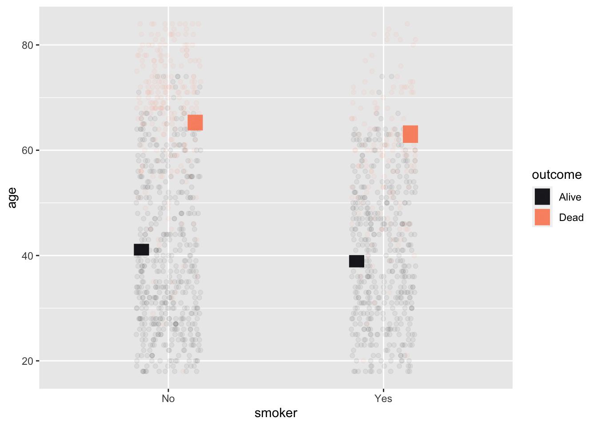
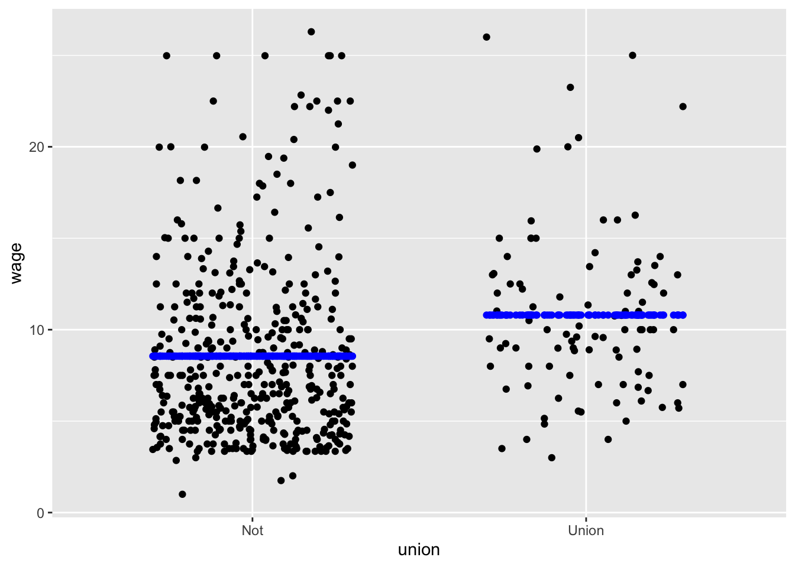
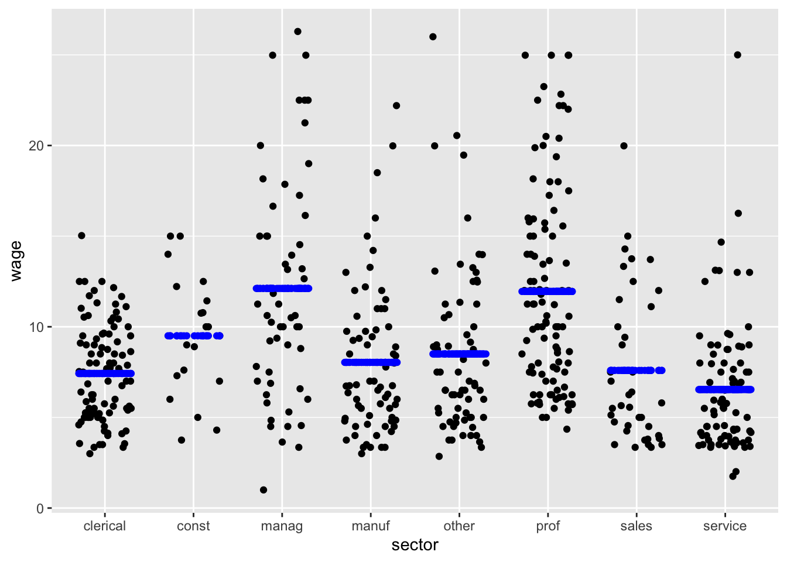
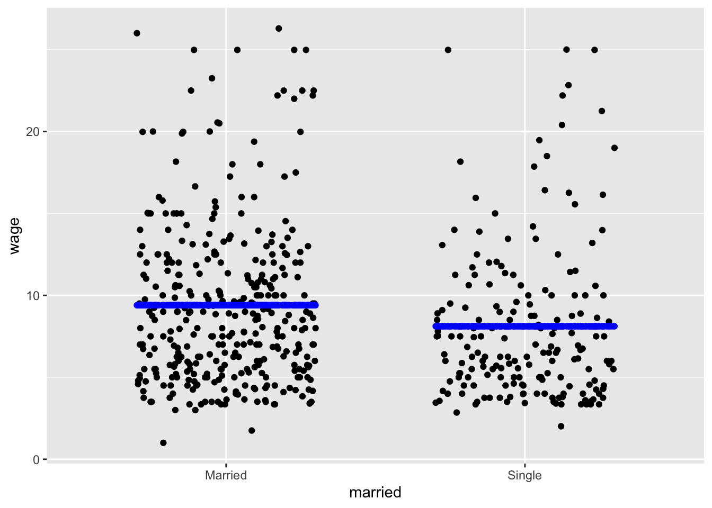
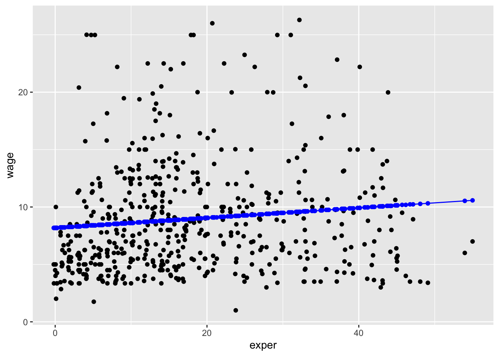
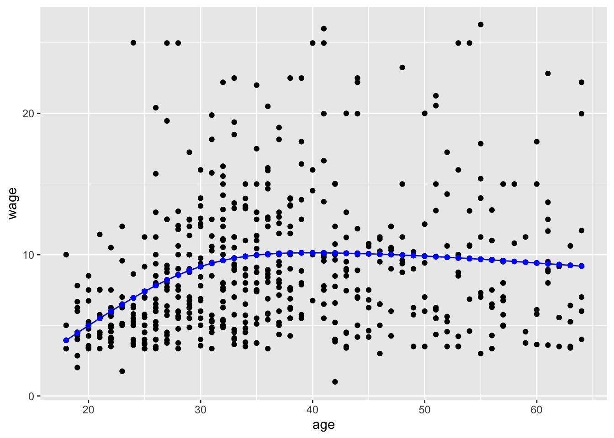
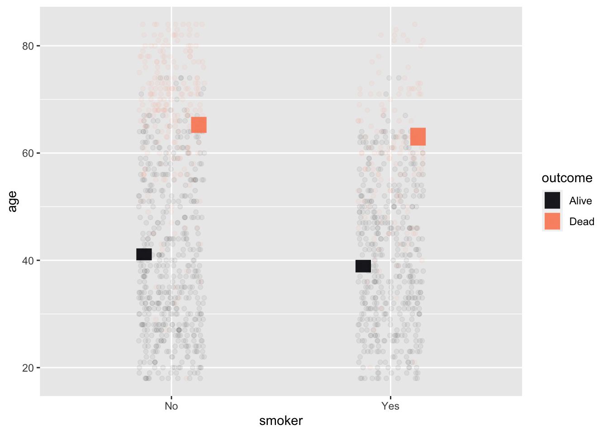
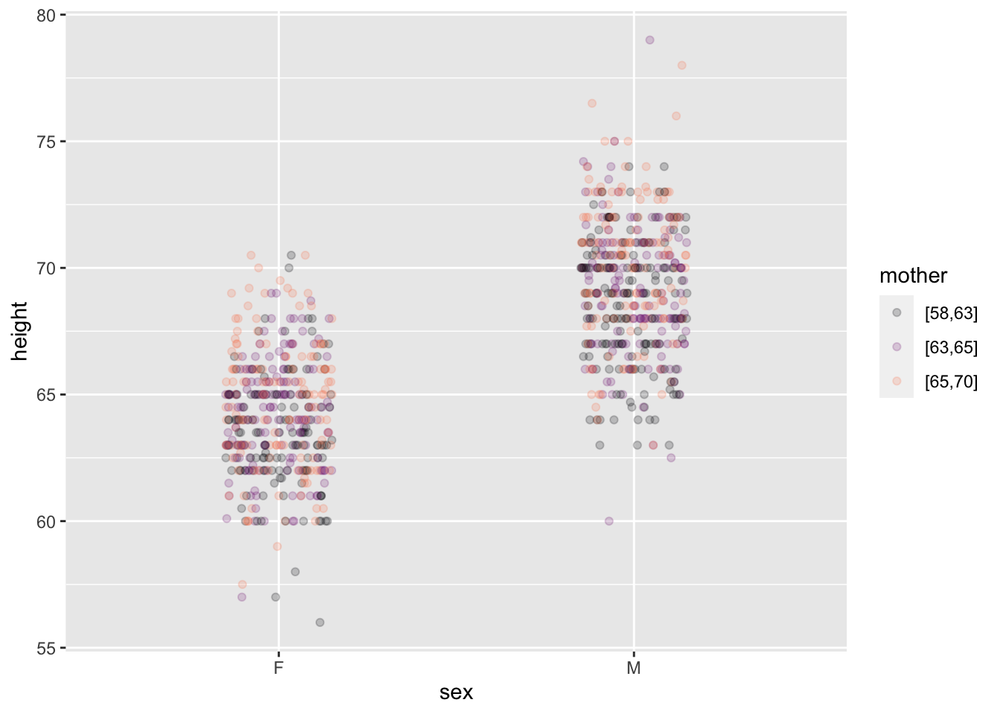
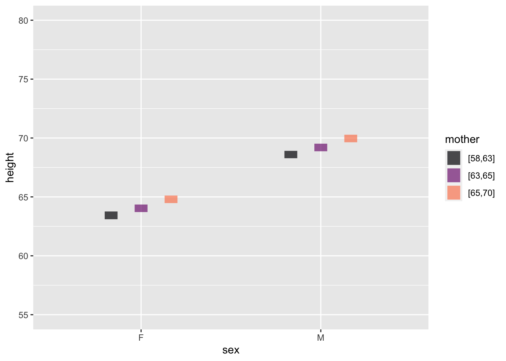

{kind=link}
Whickham |>
point_plot(age ~ smoker + outcome, annot="model",
point_ink = 0.05, model_ink=0.7) 
In these Lessons, we build many models using many different data sources. Notably, we often build multiple models from one data frame. These models use the same response variable but different explanatory variables. This enables us to compare different ways of explaining the variation in the response variable.
All of the models will have certain features in common. This Lesson points out those commonalities so that you can “read” a new model with understanding.
Figure 10.1 is a painting of a harbor scene in Istambul. It’s a rich composition intended for the human eye. There is water, a dozen boats, and a mosque—the Hagia Sophia—in the background.
It’s tempting to hope that statistical techniques could identify complex patterns like those we see in Figure 10.1. That task might barely be possible by the most up-to-date forms of artificial intelligence. Statistical modeling, however, is intended to look for much simpler patterns.
To emphasize just how simple such patterns are, ?fig-paint-strokes zooms in on a tiny area of the paining, containing just a handful of paint strokes.
It goes without saying that those few strokes give no hint about what is going on in the whole painting. We don’t expect them to.
Statistical modeling looks only for very general kinds of patterns. Not a harbor, not a boat, not even a mast or pennant. Much simpler, and much more general.
?fig-paint-edge, which shows a much larger part of the painting than ?fig-paint-strokes, illustrates one kind of simple, general pattern: a boundary or “edge.” The edge here is between the bright zone on the lower left and the darker zone on the top right. A statistical model would be able to confirm that there is such an edge and give a little more detail: the orientation of the edge and which side is bright and which side dark.
There is nothing in ?fig-paint-edge to discern that the edge in question is between the reflection of the sky and the prow of a boat. It’s just an abstract edge.
This Lesson describes how we specify to the computer the kind of simple, general pattern we are looking for in data. It also shows the “shapes” of those patterns not as painting-like image but as a model annotation in a point plot.
Two basic inputs go into constructing a model:
For directing the computer, we write the model specification as a tilde expression: the name of the response variable goes to the left of the  . The name of the explanatory variable is on the right.
. The name of the explanatory variable is on the right.
When there is more than one explanatory variable, their names all go on the right side of separated by the + symbol which stands for the English word “and” rather than an sum in the arithmetic sense.
* symbol instead of + for reasons that will be pointed out whenever we come to such a situation. We will also sometimes use mathematical functions such as log() or ns() in the model specification.From time to time, we refer to models with no explanatory variables. In such models, a simple 1 goes to the right of the . The reasons for doing this require some explanation, which will be provided in later Lessons.
Although the response variable in a regression model is always quantitative, explanatory variables can be either quantitative or categorical. Regression models may sometimes involve tens or thousands of explanatory variables in professional work. Almost all the models used in these Lessons will have one or two explanatory variables (and, occasionally, zero explanatory variables). This suffices for introducing the concepts and methods of statistical thinking.
It is convenient to think of the various combinations of explanatory variables in terms of the “shape” of a graph of the model. There are two basic shapes for models with a single explanatory variable: one shape when the explanatory variable is categorical and another shape when the explanatory variable is quantitative.
We illustrate with the CPS85 data frame. CPS85 records a small survey of workers’ wages (in 1985) and includes both numerical and categorical variables. The unit of observation is an individual worker. The categorical variable sector records the type of each worker’s job; levels for sector include clerical, manufacturing, sales, service. etc.
In the following subsections, we compare the shapes of several models, all of which use wage as the response variable.
First, consider models with a single explanatory variable. When that explanatory variable is categorical, the model shape consists of potentially different values for each level of the explanatory variable. Figure 10.2 shows two examples:

wage ~ union
wage ~ sector
wage ~ marriedWhen the explanatory variable is quantitative, the model values are arrayed on a smooth curve, as in Figure 10.3.

wage ~ exper
wage ~ educ
wage ~ ns(age, 3)Explanatory variables can be either quantitative or categorical. With two explanatory variables, one is mapped to x and the other to color. Given that the response variable is always mapped to y, there are four combinations possible, each of which has a distinctive graphical format:
| Example | Horizontal axis (x) | Color |
|---|---|---|
| Figure 10.4 | categorical | categorical |
| Figure 10.5 | categorical | quantitative |
| Figure 10.6 | quantitative | categorical |
| Figure 10.7 | quantitative | quantitative |
Two categorical explanatory variables
Whickham |>
point_plot(age ~ smoker + outcome, annot="model",
point_ink = 0.05, model_ink=0.7) 
age ~ smoker + outcome
This example shows data from a survey of female voters in the UK. Each voter’s age and smoking status were recorded at an initial interview. The interview was followed up 20 years later, at which point some of the original interviewees were dead and others still living, recorded in the variable outcome. Unsurprisingly, the older interviewees were much more likely to have died during the 20-year follow-up. The model values show the difference in mean ages between the smokers and non-smokers separately for the survivors and non-survivors. With two categorical variables, each with two levels, there are four distinct model values.
Categorical & quantitative
This example shows (full-grown) child’s height as a function of the child’s sex and his or her mother’s height.
# The code version to appear in the text
Galton |>
point_plot(height ~ sex + mother, point_ink = 0.2)
Galton |>
mutate(modval = model_values(height ~ sex + mother)) |>
point_plot(modval ~ sex + mother) |>
gf_lims(y = c(55, 80))

height ~ sex + mother
Reading such a graph takes patience. We’ve tried to help by separating the data and model-value layers. In the data layer, you can easily see that some males are taller than almost all females, and some females are shorter than nearly all males. The model layer strips away the residuals, producing a discernible pattern: the shorter children of either sex tend to have shorter mothers (black) and that taller children of each sex tend to have taller mothers (orange).
The model-value layer shows the extent of the relationship between mother’s and child’s height more clearly. (This is exactly what models are supposed to do!) You can see that the model values differ for children of the shortest mothers and of the tallest mothers. The different is about 3 inches of child’s height.
The model values are faithful to the data, but leave out the residuals. The raw data include the residuals. The non-zero size of residuals means that children of the shortest mothers differ in height from the model values. Similarly for the children of the tallest mothers. The result is, in the raw data, that some children of the shorter mothers are in fact taller than some children of the taller mothers. The model values, by stripping away the residual child-to-child differences, make the trends easier to see.
Quantitative & categorical
This example shows the same data and model as the previous example. The only difference is that the quantitative explanatory variable is mapped to x while the categorical explanatory variable is mapped to color.
Point for point, the model values in Figure 10.6 are the same as in Figure 10.5. But the new arrangement spreads them out differently in space. In Figure 10.6 the model values are organized along two straight lines, one for each sex. The slope of the lines indicates the relationship between mother’s and child’s heights. The vertical offset between the lines is the difference in model values for the two sexes.
Figure 10.6 is easier to read than Figure 10.5. This illustrates a simple principle for effective graphics: When a model has one quantitative and one categorical explanatory variable, map the quantitative variable to the horizontal axis.
Galton |>
point_plot(height ~ mother + sex, annot="model",
point_ink = 0.1, model_ink=0.7)Two quantitative explanatory variables
This example draws on the same data frame as the previous two examples, but we use the mother’s and father’s heights for the explanatory variables. Both these explanatory variables are quantitative.
Galton |> point_plot(height ~ mother + father)
Galton |>
mutate(modvals =
model_values(height ~ mother + father)) |>
point_plot(modvals ~ mother + father) |>
gf_lims(y=c(55,80))height ~ mother + father
As in Figure 10.5, mapping a quantitative variable to color makes the graph hard to read. To simplify, we’ve separated the data layer from the model layer.
It’s almost impossible to see the relationship between fathers and children’s heights in the data layer. By stripping away the child-to-child residuals, the model-value layer clarifies the pattern. father is mapped to color, so the color strata represents the father/child relationship: shorter fathers (black) are tend to be lower on the y scale that represents the child’s height. Taller fathers (orange) are associated with higher y values, that is, taller children. mother is mapped to x, so the mother/child relationship appears in the upward slope of the cloud of model-values, similar to the slope in Figure 10.6.